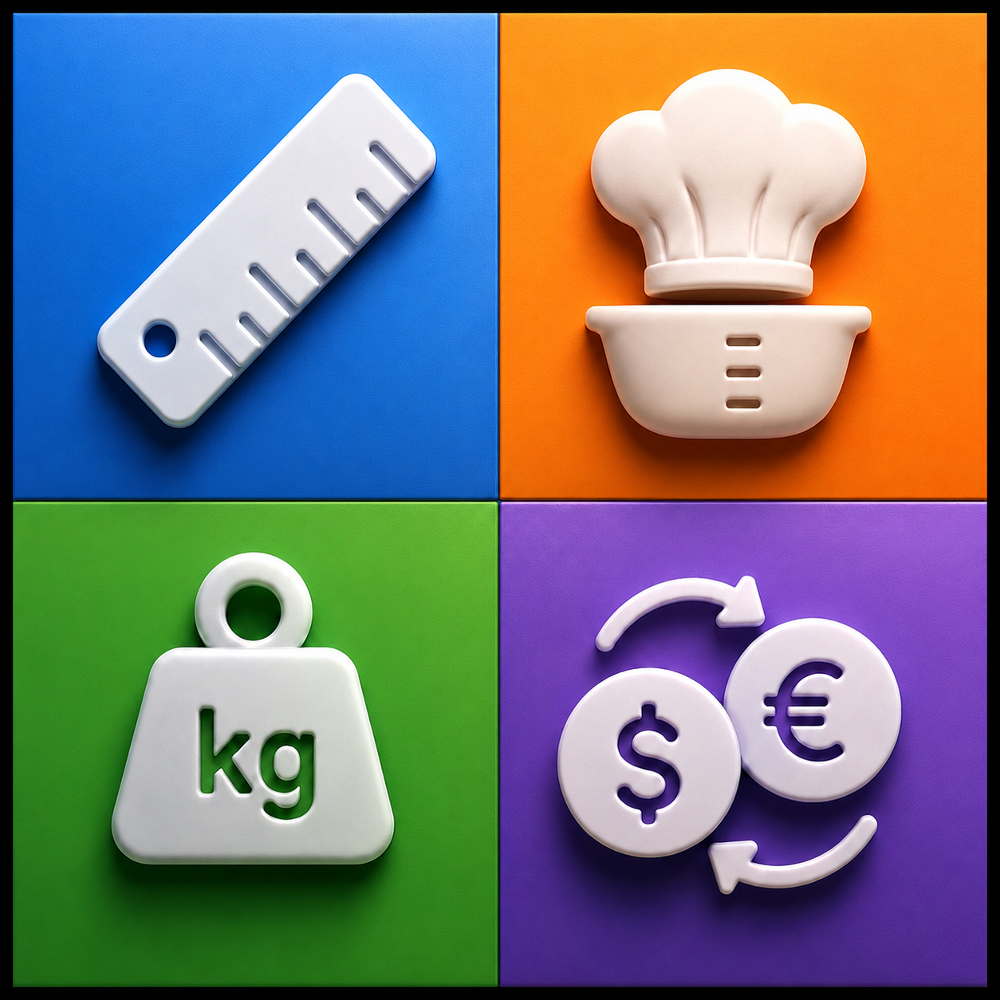
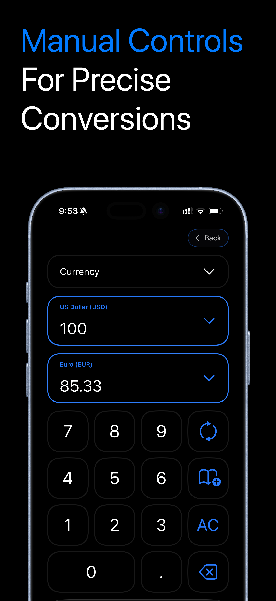
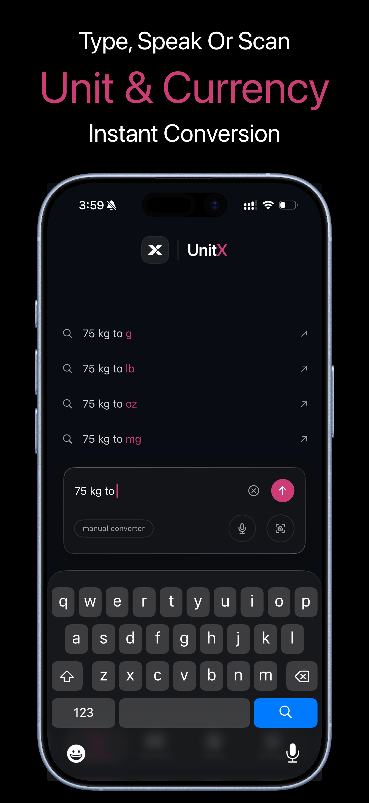
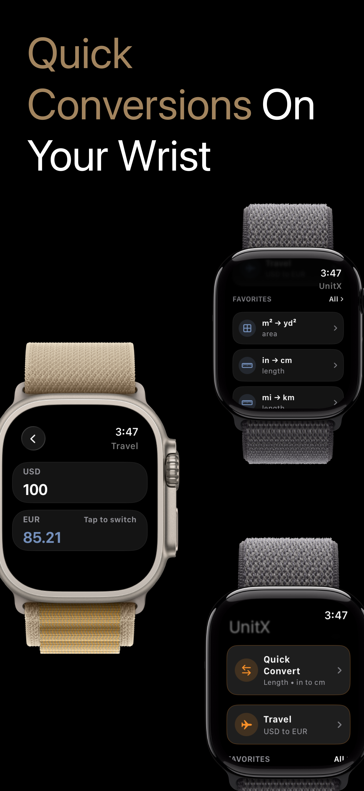
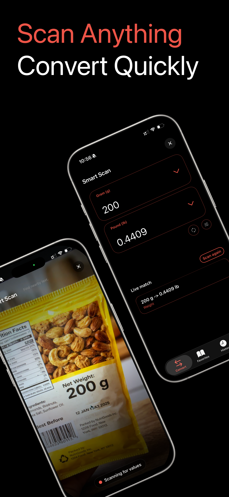

UnitX - Smart Unit Converter
Type it. Say it. Scan it. Convert it. A faster way to move from real-world measurement moments to trustworthy answers.



UnitX connects typed input, manual controls, camera scan, voice conversion, saved pairs, history, and Apple Watch into one flexible conversion workflow for everyday moments.
Overview
Most converter apps solve the math, but still force users through setup. UnitX reframes conversion as a micro-task: express intent first, then edit or save the result.
Project Info
- Category / Utility App
- Platform / iPhone and Watch
- Model / Freemium
Services
- Product Strategy
- UI/UX Design
- SwiftUI Build
- Launch QA
Project Timeline
The project moved from product framing to interaction design, then into SwiftUI implementation, monetization, watch support, and release preparation.
Job stories, utility positioning, feature model, and freemium boundaries.
Smart input, manual handoff, camera flow, favorites, history, and watch IA.
SwiftUI screens, parser support, currency service, StoreKit, and Watch sync.
QA checks, screenshot planning, App Store copy, monetization, and polish.
Competitive Analysis
The product opportunity was not more units. It was reducing friction across the different ways people encounter conversion needs.
User Jobs
Conversion needs appear in small, scattered moments. The interface had to support speed, precision, recovery, and repeated use.
Product Map
Every input path leads to the same structured conversion model, so the user can inspect, edit, save, replay, or continue on Watch.
Final Experience
The final app balances a fast smart-input surface with precision controls, camera workflows, retention loops, and watch access.
Smart Convert
Start with intent instead of setup.
Manual Control
Precise category, unit, value, and swap controls.

Camera Scan
Turn nearby printed text into a conversion moment.
Watch
Repeat common conversions away from the phone.
Visual System
The visual language is dark, crisp, and utility-focused, softened for the Behance presentation through pastel boards and rounded editorial elements.
Result-first hierarchy
Large values, compact supporting labels, and clear source or target units keep the answer readable at a glance.
Recoverable workflows
Smart results can move into manual control, favorites can be reopened, and history gives users a way back.
Premium utility
Pro features are attached to repeated value: voice, camera, Apple Watch, unlimited history, favorites, and themes.
Trust And QA
For a utility app, reliability is part of the design. The app has to communicate uncertainty and keep editable state aligned with the shown result.
Smart handoff
Smart results open manual conversion with a fresh presentation state, avoiding stale unit pairs.
Scan recovery
Camera recognition can be ambiguous, so manual editing stays available.
Currency limits
Rates are useful for everyday decisions without pretending to be financial precision.
Watch repeat use
Favorites and recents make the companion app useful beyond a novelty flow.
Conversion is not one workflow. It is a family of moments.
The best version of UnitX is not the converter with the most categories. It is the converter that lets people reach the answer in the way the moment naturally allows.